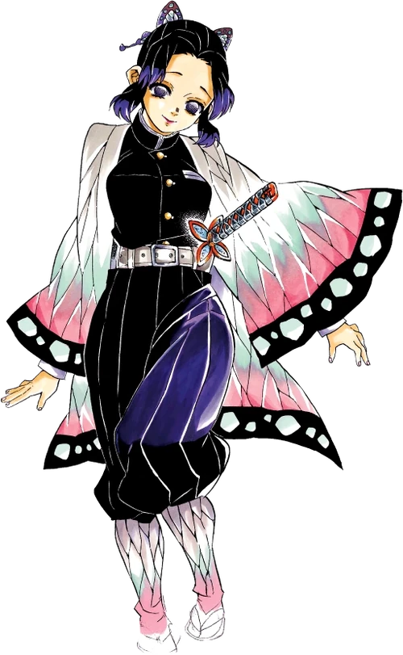
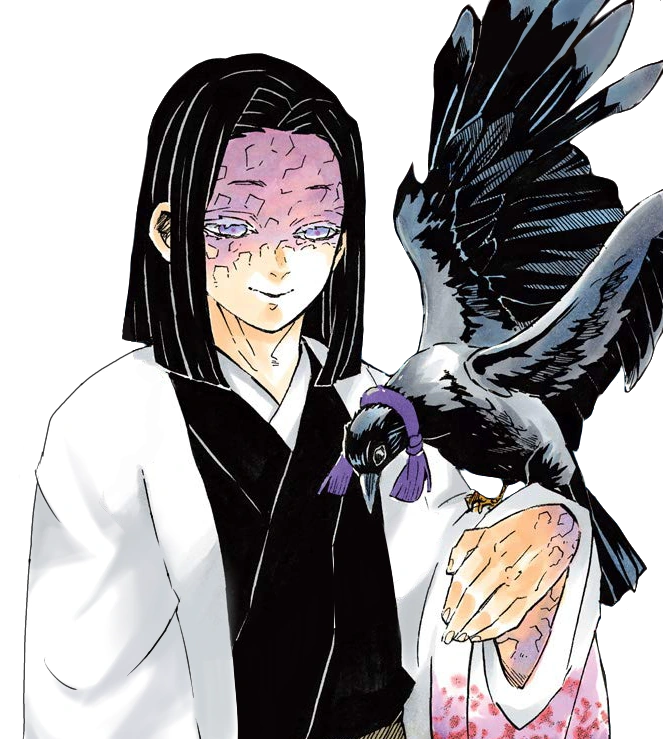
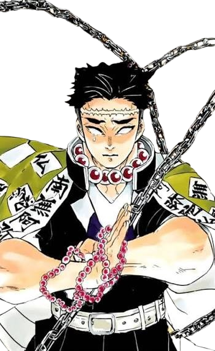
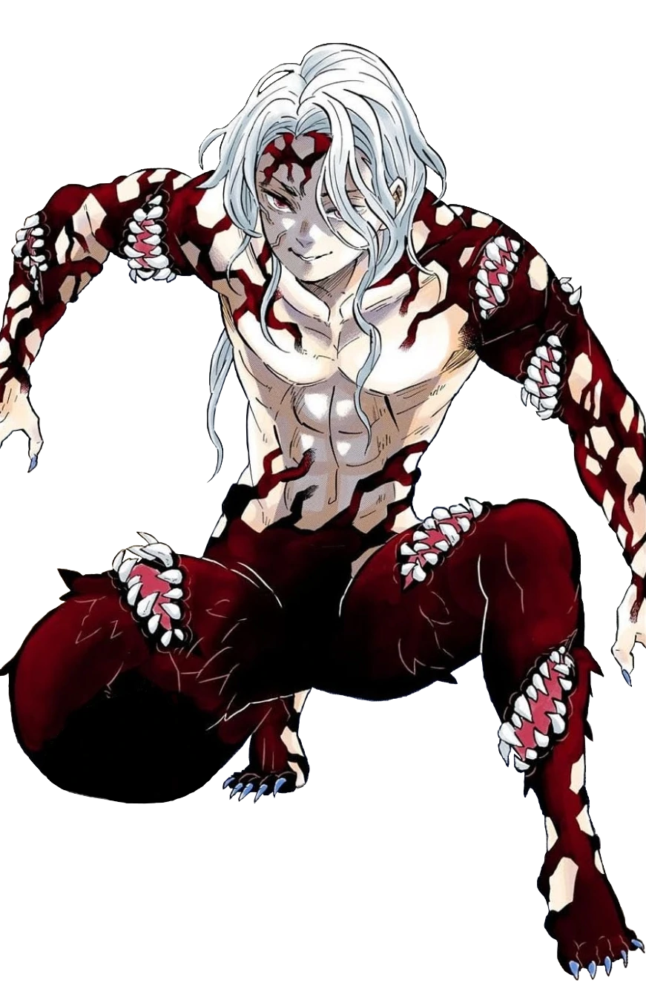
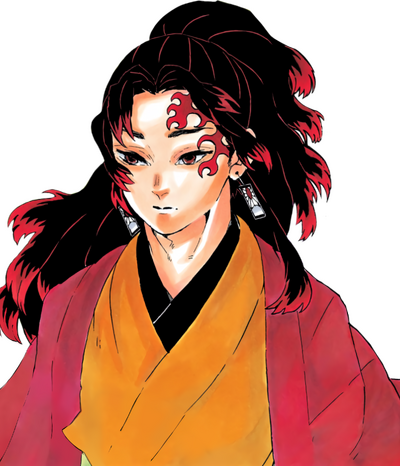
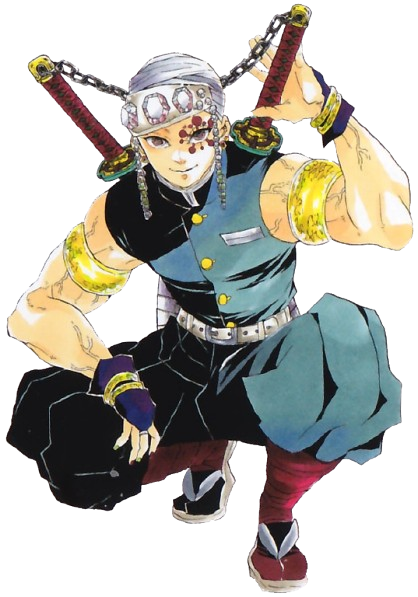
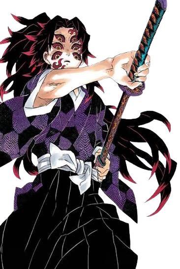

Tanjiro Kamado
Olfato Absurdo
Dureza da Cabeça
Olfato Absurdo
Dureza da Cabeça

Mestra do Veneno
Incapacidade de Decapitar

Carisma Divino
Maldição Hereditária

Cegueira e Percepção
Hashira mais Forte

Anatomia Bizarra
Rei Primordial

Criador da Respiração do Sol
Único Trauma do Muzan

Estilo de luta Próprio
Flexibilidade Absurda

Ninja
Extravagante

Primeiro Oni Espadachin
Criador da Respiração da Lua